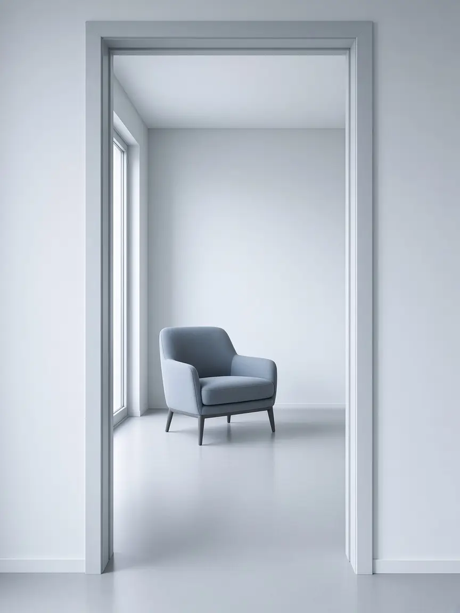
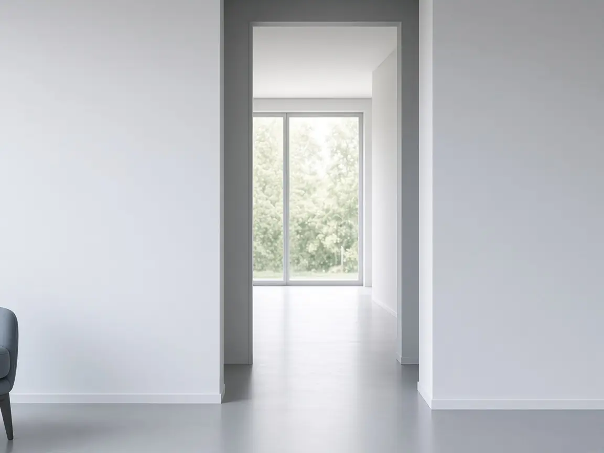
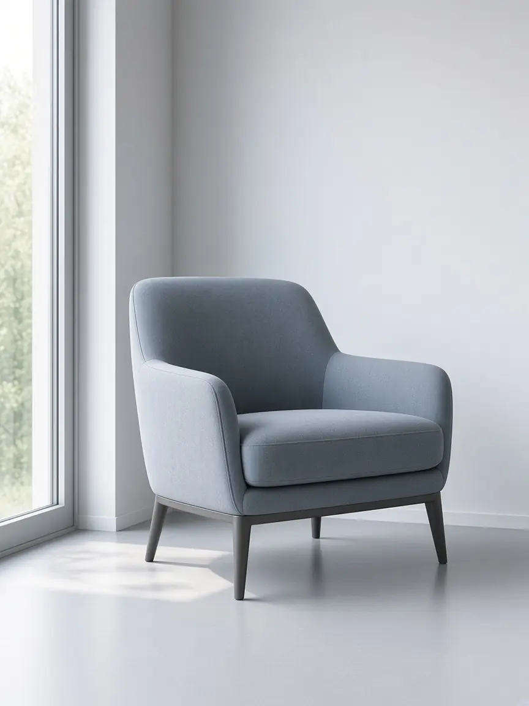
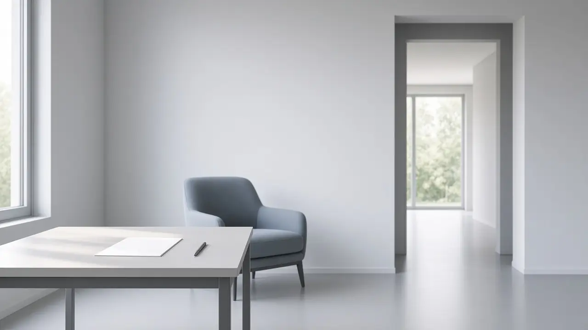

This is a professional psychotherapy practice in Australia. The rooms are unhurried. If it feels like the right place, leave a note, and a reply will come.
The work is psychotherapy, held in a quiet room, at a time you agree together. The site, the rooms and the way you get in touch should feel like the same place: considered, uncluttered, and ready for your own words.

Appointments are arranged by enquiry, not by an open calendar. The first visit is a conversation, in a quiet room, at an agreed time.

A short note is enough to begin. Say what would help to know, or simply ask for a time.
Name, an email address, and whatever you would like to say. Appointments are arranged from there.

Thank you. A reply will come to the address you gave.
A reply comes to the address you gave. Appointments are arranged from there.
Practice